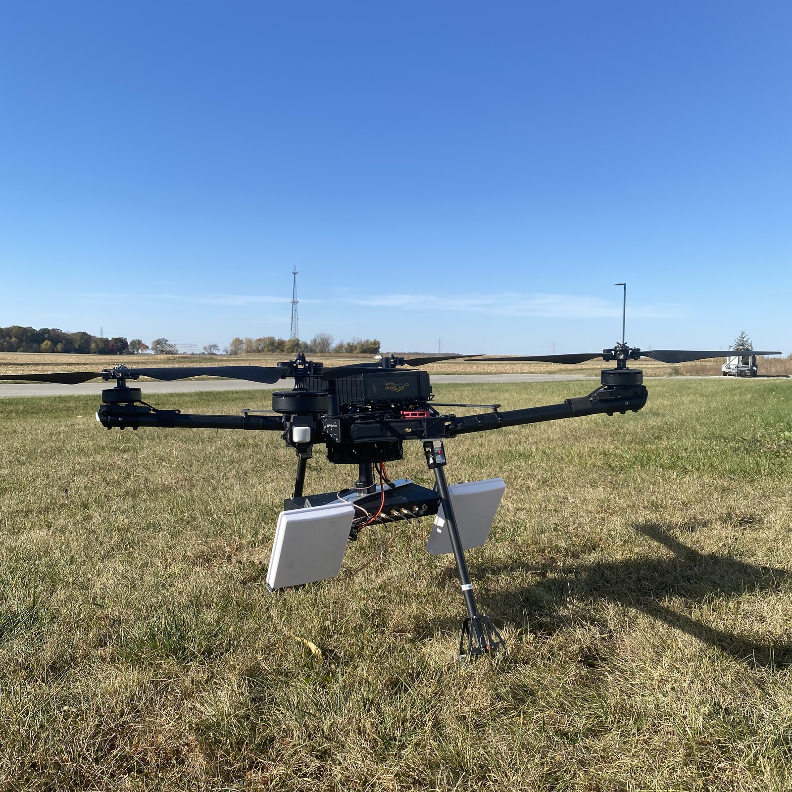
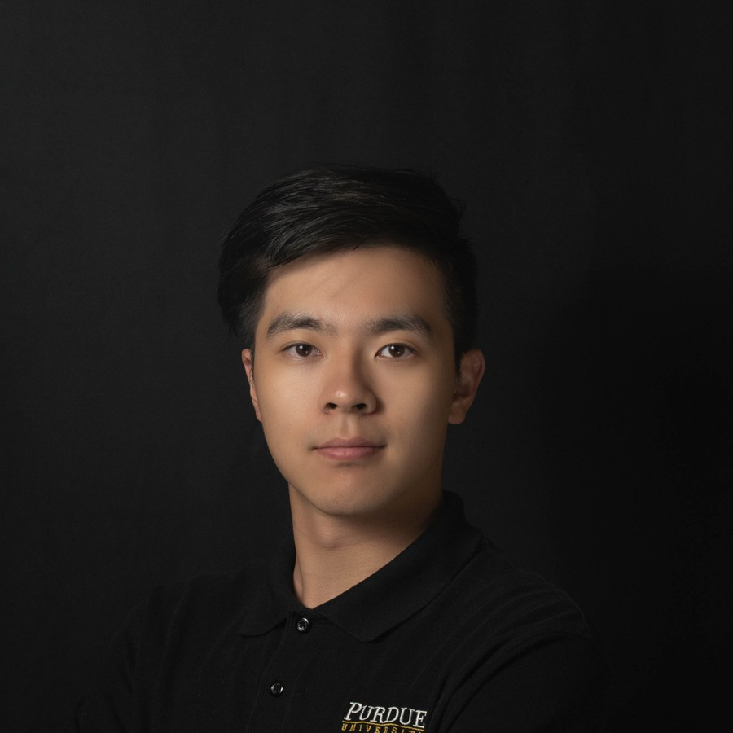
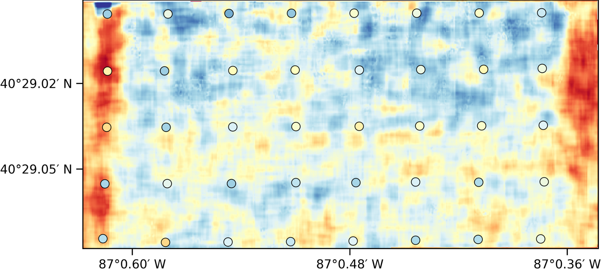
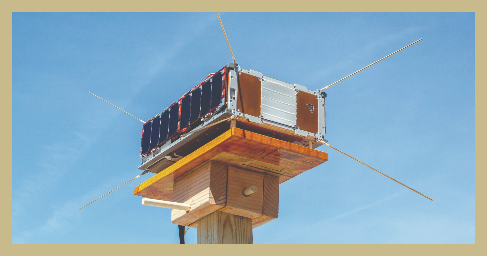

DroneSAR
UAV Synthetic Aperture Radar
Design and development of an S-band UAV SAR system for high-resolution agricultural remote sensing and field-scale mapping.

Radar · Remote Sensing · Navigation
Ph.D. Candidate in Aeronautics and Astronautics · Purdue University
I develop sensing and estimation methods for Earth observation and positioning, with a focus on UAV-based synthetic aperture radar (SAR), microwave remote sensing, GNSS/signals of opportunity, and multi-sensor navigation.
I am a Ph.D. candidate in Purdue University's School of Aeronautics and Astronautics and a member of the Radio Navigation Laboratory. My work connects instrumentation, signal processing, geospatial products, and estimation methods for both Earth remote sensing and positioning applications.
I lead the DroneSAR effort, an S-band UAV-based synthetic aperture radar platform for high-resolution agricultural remote sensing. My research spans radar calibration, SAR image formation, georeferencing, field experiments, and soil-moisture retrieval. I have also contributed to SNOOPI, CYGNSS, and related signals-of-opportunity remote sensing efforts.
My industry experience spans location technology and sensor fusion at Qualcomm, GNSS system development at Samsung Semiconductor, and semiconductor dry-etch process development at Micron Technology. These roles have given me experience carrying modeling, simulation, sensing, and data-analysis methods into product-oriented engineering environments.

Design and development of an S-band UAV SAR system for high-resolution agricultural remote sensing and field-scale mapping.

Turning calibrated radar observations into geophysical products through retrieval models, uncertainty-aware estimation, and field validation.

Remote sensing using existing communication and navigation transmissions, including CubeSat-scale sensing concepts such as SNOOPI.
Sensor fusion using VIO, IMU, and GNSS for mobile and extended-reality positioning, together with sensor noise and error characterization.
Modeled TCXO phase noise and evaluated its impact on GNSS acquisition, signal quality, and tracking-loop stability.
Worked on DRAM/HRAM dry-etch process development, including word-line metal process studies, data analysis, and machine-learning-based etch-rate estimation.
Featured media
A short demonstration video of the DroneSAR platform and field operation context. This project integrates the radar, UAV platform, calibration workflow, SAR processing chain, and downstream science products.
Low-altitude S-band SAR systems, calibration, motion compensation, image formation, and georeferenced radar products.
Retrieval of soil moisture and vegetation properties from high-resolution radar observations for precision agriculture.
GNSS reflectometry and passive/bistatic sensing concepts including SNOOPI and related Earth-observation applications.
Probabilistic estimation and fusion of complementary navigation sensors, including GNSS and visual-inertial information.
Contact